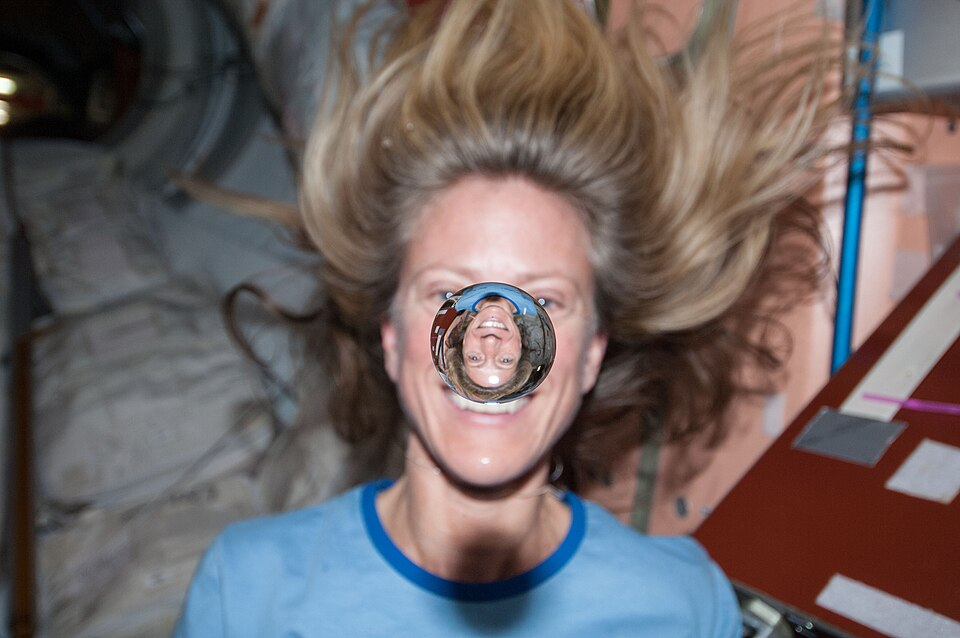
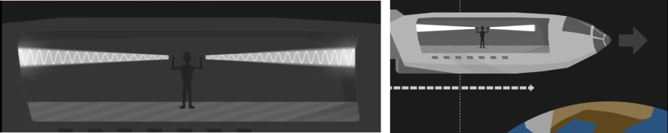
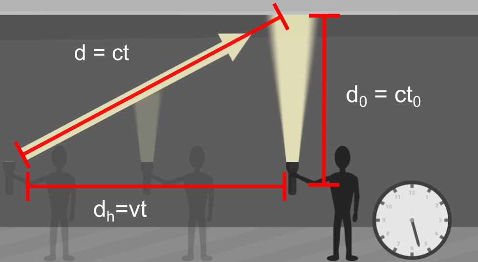
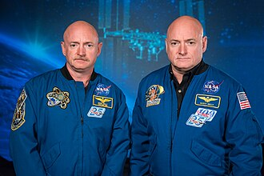

Velkommen til et af de mest fascinerende og kontraintuitive emner i fysikken: Relativitetsteorien. Når vi bevæger os med hverdagshastigheder – som når vi cykler til skole eller kører i bil – virker verden logisk og forudsigelig. Men hvad sker der, når hastighederne nærmer sig lysets fart, eller når vi kigger på universets helt store strukturer? Albert Einstein revolutionerede vores forståelse af tid, rum og bevægelse ved at vise, at fysikkens love afhænger af, hvem der kigger, og hvordan de bevæger sig.
<label>Regnestykke: </label>
<input type="text" id="regner" placeholder="f.eks. sind(90) + sqrt(16)" oninput="lynBeregn()">
<script src="beregner.js"></script>Vi kommer til at gennemgå en video og dens argumenter.
Vi starter med at Se første minut
Et initialsystem er et koordinatsystem (eller en referenceramme), hvor Newtons første lov gælder. Det betyder kort fortalt, at hvis en genstand ikke påvirkes af en resulterende kraft, vil den enten ligge stille eller bevæge sig med en konstant hastighed i en retlinet bane.
Definition: Et initialsystem er en referenceramme, der ikke accelererer. Alle referencerammer, der bevæger sig med konstant hastighed i forhold til et initialsystem, er selv initialsystemer.
Forestil dig, at du står i dit fysiklokale og et tog kører forbi, måske kan du se Hovedbanegården fra lokalet. I laver eksperiment med 1.d bevægelse af en bold som I lader falde. I toget er en klasse i gang med præcist det samme forsøg. Toget kører med en hastighed på $20\frac{\text{km}}{\text{time}}$.
Først eksperimentet i toget, som I kan se gennem vinduerne.
Nu eksperimentet i fysiklokalet som dem på toget også kan se, vinduer igen.
Som I kan se er beskrivelsen helt ens eller helt omvendt hvis I vil. Dette er netop relativitetsprincippet, hvor I ikke kan afgøre hvem der er i bevægelse og hvem der står stille.
Tænkespørgsmål

Selvom vi føler, at vi sidder stille i fysiklokalet, er vi i konstant og hurtig bevægelse gennem universet. Lad os regne på de hastigheder, vi normalt ignorerer.
Opgave 1: Jordens rotation

Jorden drejer om sin egen akse én gang pr. døgn. Da jorden er en kugle, afhænger din hastighed af din breddegrad. Ved ækvator er hastigheden højest, mens den er nul ved polerne. Omkredsen i cirklen kan beregnes som,
domkreds = 2 ⋅ π ⋅ Rjord ⋅ cos (ϕ).
For København, ca. ϕ = 55.67∘ nordlig bredde og Rjord ≈ 6371 km.
Hastigheden kan beregnes som længden man har bevæget sig divideret med hvor lang tid det har taget,
$$ v = \frac{d_{omkreds}}{T}, $$
hvor T = 24 timer.
Opgave 2: Jorden omkring Solen Jorden bevæger sig i en næsten cirkulær bane om solen med en radius på ca. 149, 6 millioner km (1 AE). Tiden for et omløb er 1 år (365, 25 døgn).
Opgave 3: Solen i Galaksen Vores solsystem er ikke stationært; det kredser om centrum af Mælkevejen i en afstand af ca. 26.000 lysår. Et “galaktisk år” tager omkring 230 millioner år.
Opgave 4: Så sid dog stille
Lige som på ISS så bevæger vi os i cirkler, Jorden om egen akse, Jorden om Solen og Solen om galakse-centret.
Vi vil nu se på de to postulater som Einstein kom med i 1905. I 1905 udgav Albert Einstein artiklen “Om bevægede legemers elektrodynamik”. Her opstillede han to grundlæggende antagelser, som udfordrede vores klassiske forståelse af fysikken:
1. Det specielle relativitetsprincip Fysikkens love er de samme i alle initialsystemer.
Dette betyder, at hvis du udfører et fysikforsøg i et laboratorium, der står stille på Jorden, vil du få nøjagtig samme resultat, hvis du udfører det i et tog eller et rumskib, der bevæger sig med konstant hastighed. Der findes altså ikke én “rigtig” hviletilstand i universet; al jævn bevægelse er relativ.
Eksempel: Hvis du taber en bold i et tog, der kører jævnt, falder den lodret ned præcis som i dit soveværelse.
2. Princippet om lysets konstans Lysets fart i vakuum har den samme værdi c = 299792458m/s ≈ 3 ⋅ 108 m/s for alle observatører, uanset deres egen bevægelse eller lyskildens bevægelse.
Eksempel: Hvis I ser et rumskib flyve forbi med halvdelen af lysets hastighed og tænde forlygterne, hvor hurtigt vil I så se lyset bevæge sig frem?
Svaret er at både jer på Jorden og folkene i rumskibet vil se lyset bevæge sig frem med samme hastighed, c.
Tænkespørgsål
Det er her er meget mærkeligt eller passer dårligt med vores intuition. * Gennemgå eksemplet helt langsomt.
Vi skal lave et meget simpelt eksperiment hvor vi kan bestemme lysets hastighed. Som i Olsenbanden er udstyrslisten god. Vi skal bruge; 1 mikrobølgeovn, et stykke bøjet pap, en lineal og en æske lys pålægschokolade.
Teori
Vi kan bruge bølgeligningen til at estimere lysets hastighed. Bølgeligningen,
v = λ ⋅ f,
hvor λ er bølgelængden og f frekvensen.
I en mikrobølgeovn opstår der stående bølger og vi kan måle bølgelængden ved at se på hvor den lyse pålægschokolade smelter.
Den lyse pålægschokolade smelter der hvor der er bug i de stående bølger. Hvis vi måler afstanden mellem finder vi altså λ/2.
Udførsel
Databehandling
Vi skal minde os om hvordan man normalt lægger hastigheder sammen og se at det er helt anderledes for lys.
Det bliver beskrevet i videoen: Se videoen fra 1:00 til 2:33
Opgave 5: addition af hastigheder
Vi lader rumskibet bevæge sig med en hastighed på $v_s = 200\frac{\text{m}}{\text{s}}$ i forhold til Jorden og bolden blive kastet med en hastighed i forhold til personen på $10\frac{\text{m}}{\text{s}}$.
Lad os skrue hastigheden af rumskibet op til 99% af lysets hastighed og lade personen tænde en lommelygte pegende frem idet han passere Jorden. * Med hvilken hastighed ser personen i rumskibet lyset bevæge sig med? * Med hvilken hastighed ser personen på Jorden lyset bevæge sig med?
Den måde man addere hastigheder gælder altså ikke for lys og hastigheden er altid den samme!
Ifølge relativitetsteorien er alt relativt, undtagen lysets hastighed i vacuum som altid er den samme!
Vi skal se på hvilken konsekvenser det at lysets hastighed er konstant har. Vi starter med at se på hvad det betyder for forståelsen af at noget sker samtidigt.
I videoen udsender personen i rumskibet to lysstråler og alt efter om man står på Jorden eller er i rumskibet ser det ikke ud til at de rammer endevæggene samtidigt. Lad os starte med at udregne hvordan det ser ud hvis det ikke er lys, men en bold han kaster.

Opgave 6: ikke relativistisk
Nedenfor er udledningen skrevet. For at følge den skal I * Tegne situationen, rumskib, Jorden, bolden, manden. * Skrive udledningen op og diskutere de forskellige dele.
Vi lader personen stå i midten af rumskibet og kaste to bolde en frem og en tilbage. Lad rumskibet være 20 meter langt og hastigheden han kaster med være om 10m/s.
Set fra rumskibet
Afstanden bolden har bevæget sig er givet ved hastigheden gange tiden (x = v ⋅ t).
Set fra Jorden
Fra Jorden ser der lidt anderledes ud.
Vi lader t = 0 være affyringstidspunktet, hvor rumskibets midte er i x = 0.
Udregning for forvæggen
Forvæggen bevæger sig væk fra bolden. Vi skal finde det tidspunkt tfor, hvor boldens position er lig med væggens position.
Væggens position: xvæg(t) = 10m + 200m/s ⋅ t
Boldens position: xbold(t) = 210m ⋅ t
Bolden må ramme væggen nå xvæg(t) = xbold(t).
Løsning: Vi sætter dem lig hinanden (vi dropper enheder da det hele er i SI-enheder): 210 ⋅ t = 10 + 200 ⋅ t ⇔ 210t − 200 ⋅ t = 10 ⇔ 10 ⋅ t = 10 ⇔ t = 1
Udregning for bagvæggen
Bagvæggen bevæger sig mod bolden. Vi skal finde det tidspunkt t, hvor de mødes.
Væggens position: xvæg(t) = −10m + 200m/s ⋅ t
Boldens position: xbold(t) = 190m/s ⋅ t
Løsning: 190 ⋅ t = −10 + 200 ⋅ t ⇔ −10 ⋅ t = −10 ⇔ t = 1
Med bolde er begivenhederne altså ens, men hvad med lys.
Hvis vi erstatter bolden med lys, må vi ikke bruge vfrem = 210 m/s og vbag = 190 m/s. Vi skal bruge c begge steder.
Hvis du prøver at indsætte c får vi at får vi at hastigheden frem er vfrem = c og hastigheden bagud er vbagud = −c.
For forvægge;
Væggens position: xvæg(t) = 10m + 200m/s ⋅ t
Lysets position: xlys(t) = c ⋅ t
Lyset må ramme væggen nå xvæg(t) = xbold(t).
Sæt de to ligning lig hinanden og løs for t.
xlys = c ⋅ t
xforende = 10 + 200 ⋅ t
x-koordinerter er ens når $$x_{lys} = x_{forende} \Leftrightarrow c \cdot t = 10 + 200 \cdot t \Rightarrow t = \frac{10}{c - 200}$$
For bagvæggen;
Væggens position: xvæg(t) = −10m + 200m/s ⋅ t
Lysets position: xlys(t) = −c ⋅ t
x-koordinaterne er ens når; $$ x_{lys} = x_{bagende} \Leftrightarrow -c \cdot t = -10 + 200 \cdot t \Leftrightarrow -c\cdot t - 200 \cdot t = -10 \Leftrightarrow t = \frac{10}{c + 200} $$
Her bliver nævnerne forskellige (c − 200 vs c + 200), og derfor bliver tiderne observeret forskellige.
Vi kan nu konkludere, at de to personer ikke ser lyset ramme samtidigt. Helt generelt viser den specielle relativitetsteori at to personer i relativ bevægelse i forhold til hinanden ikke er enige om hvornår noget sker.
Hvis man skal svare på spørgsmålet “skete det samtidigt” kræver det at personerne står stille i forhold til hinanden.
Opgave 7: langsomt lys
Lad os antage at lyset kun bevæger sig med c = 300m/s.
Opgave 8: hurtigt lys
Lad os nu give lyset sin rigtige fart på c = 3 ⋅ 108m/s og lade rumskibet bevæges sig med samme hastighed som den internationale rumstation, ISS, v = 7.66km/s. * Beregn tidsforskellen på at lyset rammer forenden i forhold til bagenden af rumskibet, set fra Jorden, Δt = fb − tf.
Det næste vi skal se på er tiden.
Når vi har accepteret Einsteins postulat om, at lysets fart er den samme for alle observatører, uanset deres egen bevægelse, støder vi på en mærkværdig konsekvens: Tiden går ikke lige hurtigt for alle. For at forstå dette, bruger vi ofte et tankeeksperiment med et “lysur” placeret i et tog.
I filmen udsender astronauten en lysstråle lodret op fra gulvet som rammer loftet. Ved at måle tiden det tager har han nu skabet et ur. Tiden det tager for lyset at nå loftet, kalder vi egen-tiden t0. Da lysets fart er c, er distancen til loftet givet ved d0 = c ⋅ t0.
Fra Jorden skal vi tage bevægelsen af rumskibet med. Lysstrålen bevæger sig ikke kun op men også til siden og bruger tiden t. Da lysets fart c skal være den samme, må tiden t nødvendigvis være længere end t0.
Dette fænomen kaldes tidsforlængelse (eller tidsdilatation).

Vi kan bruge figuren til at lave en retvinklet trekant.
Ved at bruge Pythagoras’ læresætning (a2 + b2 = c2) på trekanten får vi:
(v ⋅ t)2 + (c ⋅ t0)2 = (c ⋅ t)2
Hvis vi isolerer $ t$ (tiden målt af den stationære observatør), ender vi med den berømte formel for tidsforlængelse:
$$ t = \frac{1 }{\sqrt{1 - \frac{v^2}{c^2}}} \cdot t_0.$$
Denne ligning viser, at jo tættere v kommer på lysets hastighed c, desto mindre bliver nævneren, og t bliver meget større end t0.
Udledning af udtrykken ovenfor:
Ifølge Pythagoras har vi: (v ⋅ t)2 + (c ⋅ t0)2 = (c ⋅ t)2
Trin 1: Hæv parenteserne v2t2 + c2t02 = c2t2
Trin 2: Saml leddene med t på samme side c2t02 = c2t2 − v2t2
Trin 3: Sæt t2 uden for en parentes c2t02 = t2(c2 − v2)
Trin 4: Isoler t2 $$t^2 = \frac{c^2 t_0^2}{c^2 - v^2}$$
Trin 5: Divider med c2 i tæller og nævner for at forenkle $$t^2 = \frac{t_0^2}{1 - \frac{v^2}{c^2}}$$
Trin 6: Tag kvadratroden på begge sider $$t = \frac{t_0}{\sqrt{1 - \frac{v^2}{c^2}}}$$
Dette kan også skrives som: t = γ ⋅ t0 hvor γ (Lorentz-faktoren) er $\frac{1}{\sqrt{1 - \frac{v^2}{c^2}}}$.
Konklusion: Da nævneren altid er mindre end 1 (når v > 0), vil t altid være større end t0. Tiden går altså langsommere for objektet i bevægelse set fra den stationære observatør.
t0 er egentiden i rumskibet og er altså mindre end t som måles fra Jorden.
Vi kan definere den faktor som skal ganges på t0 for at få t. Den kaldes gamma-faktoren og defineres som:
$$ \gamma = \frac{1 }{\sqrt{1 - \frac{v^2}{c^2}}}. $$
Tidsforskellen kan skrives som t = γt0.
Eksempel Hvis en person rejser i et år med 90% af lysets hastighed relativt til Jorden vil den tid der er gået på Jorden være
$$ t = \frac{1}{\sqrt{1-\frac{(0.9c)^2}{c^2}}} \cdot 1\text{år} = 2.29 \text{år}. $$
Der er altså gået over dobbelt så lang tid på Jorden som i rumskibet. Tiden er med andre ord gået langsommere på rumskibet.
Vigtig pointe: Tiden går langsomst for den person, der bevæger sig hurtigt i forhold til observatøren.
Vi har udregnet det med et lysur, men det gælder alt, både Bornholmerure, armbåndsure men også hjerteslagene i din krop og synapserne i din hjerne. Selve tiden går langsommere og alt der er påvirket af tiden vil gå langsommere. Lige som om noget sker samtidigt er selve det at tiden går relativt.
Tænkespørgsmål
Opgave 9: Tidsforlængelse
I opgave 1,2 og 3 udregnede vi hvor hurtigt vi bevæger os. * Brug den fundne hastighed til at beregne hvor meget langsommere
Opgave 10: Rumrejser går da hurtige, eller
Vi vil gerne besøge vores nærmeste stjerne udover Solen som hedder Proxima Centruri og er 4, 25 lysår væk. Lad os rejse med 85% af lysets hastighed.
Set fra Jorden skal rumskibet rejse en afstand på x = 4, 25ly med en fart på v = 0.85c.
Ombord på rumskibet går tiden langsommere,
Opgave 11: Tvillingeparadokset Tvillingeparadokset er et af de mest berømte tankeeksperimenter inden for den specielle relativitetsteori. Det illustrerer konsekvenserne af tidsforlængelse.
vi vil bruge beregningerne fra før, men lad nu rumskibet svinge omkring Proxima Centauri og vende tilbage til Jorden. Vi antager at den tid det tager at svinge rundt er meget lille og ser bort fra den.
Tvillingeparadokset går nu ud på at en af astronauterne, om bord på rumskibet har en tvilling. Det kunne jo være Scott på rumsikbet og Mark på Jorden.

Det paradoksale ligger altså i at to tvillinger lige pludseligt ikke er lige gamle. Det er også muligt at blive yngre end sin mor, hvis man altså sende hende afsted på i et rumskib!
Der er en del 2 i paradokset. Ifølge relativitetsteorien er alle initialsystemer lige gode og man kan ikke sige hvem der er i bevægelse og hvem der står stille. Scott Kelly kan altså argumentere for at det er ham som står stille og Mark Kelly på Jorden som bevæger sig. På den måde burde det være Scott som var ældst efter turen.
Der sker noget på rumrejsen som gør at Scott Kelly ikke er i et initialsystem hele tiden og det er netop derfor Mark er ældst.
Opgave 12: Kelly tvillingerne igen
Scott Kelly er den person som har været længst på den internationale rumstation (ISS), 520 dage, men hans bror Mark Kelly blev på Jorden. Rumstationen bevæger sig med en fart på 7, 67 km/s og ifølge Wikipedia betyder det at han ældet ca. 8, 6milli sekunder i forhold til sin tvilling.
Bemærk at denne ændring i tiden ikke er den tidsforlængelse vi arbejde med lige ovenfor, men den som kommer af at samtidighed også er relativ.
Vi lader igen et rumskib passere Jorden med en relativ hastigheden v. Længden af rumskibet bliver målt ved at lade dets bagende passere punkt A samtidigt med at dets forende passere punkt B. Derved måles længden L0. I rumskibet måles der hvor lang tid der går før rumskibets forende passerer først A og så B. Den tid kaldes t0.
Begge observatører måler den samme relative hastighed og vi kan skrive det som;
Da v er den samme kan vi sætte de to højresider lig hinanden, $$ \frac{L_0}{t} = \frac{L}{t_0} \Leftrightarrow L_0 = \frac{L}{t_0} \cdot t. $$ Vi kan nu bruge formlen for tidsforlængelse, $t = \frac{1}{\sqrt{1 - \frac{v^2}{c^2}}} t_0$ og indsætte
$$ L _0= \frac{L}{t_0} \cdot t =\frac{L}{t_0} \cdot \frac{1}{\sqrt{1 - \frac{v^2}{c^2}}} t_0 = \frac{1}{\sqrt{1 - \frac{v^2}{c^2}}} L. $$
Hvis vi bruger gamma-faktoren kan det skrive som; $$ L = \frac{1}{\gamma}L_0 $$
I videoen så vi hvordan længder også er relative. Formlen for længde-formindskelse er;
$$ L = \sqrt{1-\frac{v^2}{c^2}}\cdot L_0. $$
Da $\sqrt{1-\frac{v^2}{c^2}}<1$, må længden i hvile være længere end længden ved et objekt som bevæger sig.
Opgave 14: turen til Proxima Centauri
I opgave 11 udregnede I at det tog t0 = 2, 64 år i rumskibets egentid at tilbagelægge afstanden mellem Jorden og Proxima Centauri. Men med en afstand på 4, 25ly skal de have en fart på v = 1, 6 ⋅ c, som er højere end lysets for at nå derhen. Det kan ikke passe.
Opgave 15: stigen i vognen En pensioneret overlærer vil gerne hjælpe sin datter med at male. Da datteren bor højt oppe har den pensionerede overlærer brug for en lang stige. Den pensionerede overlærers stige er 4,2 meter lang og han har en Morris Minor
Vi har nu argumentet for at længder bliver kortere og tiden bliver længere når vi bevæger os. Det kan kun observeres hvis vi bevæger os meget hurtigt, men hvad nu hvis vi kunne skrue ned for lysets hastighed. Det kan vi selvfølgeligt ikke i virkeligheden, men i et computerspil kan vi godt.
I klassisk mekanik er undvigelseshastigheden den fart, et objekt skal have for at undslippe et himmellegemes tyngdefelt helt. Det sker, når den kinetiske energi er lig med den potentielle energi:
$$\frac{1}{2}mv^2 = \frac{G \cdot M \cdot m}{r}$$
Hvor: * G er den universelle gravitationskonstant. * M er massen af det tunge objekt (f.eks. en stjerne). * m er massen af det objekt, der prøver at undslippe. * r er afstanden fra centrum.
For at finde “the point of no return” – altså begivenhedshorisonten for et sort hul – sætter vi undvigelseshastigheden v til at være lig med lysets fart c. Hvis selv lyset ikke kan slippe væk, kan intet andet i universet heller ikke.
Vi omstiller ligningen (hvor m går ud mod hinanden):
$$\frac{1}{2}c^2 = \frac{G \cdot M}{r}$$
Nu isolerer vi r, som vi kalder Schwarzschild-radiussen (Rs):
$$R_s = \frac{2 \cdot G \cdot M}{c^2}$$
Det fascinerende er, at denne klassiske udledning (som blev foreslået af John Michell helt tilbage i 1783) giver præcis det samme resultat som Einsteins meget mere komplekse feltligninger fra den almene relativitetsteori.
I virkeligheden er fysikken bagved dog anderledes: 1. Klassisk: Lyset bremses ned af tyngdekraften, indtil det falder tilbage (som en sten kastet i vejret). 2. Relativistisk: Lyset har altid farten c, men selve rumtiden er krummet så kraftigt inden for Schwarzschild-radiussen, at alle veje for lyset peger indad mod centrum.
Prøv at beregne Schwarzschild-radiussen for Jorden. * Brug Mjord ≈ 5, 97 ⋅ 1024 kg. * De vil opdage, at hvis man pressede hele Jorden sammen til et sort hul, ville den kun være ca. 9 mm i radius (på størrelse med en glaskugle)!
Myoner er en form for “tunge elektroner”, der skabes i de øverste lag af atmosfæren (ca. 10 km oppe), når kosmisk stråling rammer atomer i luften.
De tørre tal:
Levetid: En myon lever i gennemsnit kun t0 ≈ 2, 2 µs (2, 2 ⋅ 10−6 sekunder), før den henfalder.
Hastighed: De suser mod Jorden med ca. 99,8 % af lysets hastighed (v = 0, 998c).
Hvis vi ikke kendte til relativitetsteori, ville vi beregne deres rækkevidde sådan her:
I virkeligheden detekterer vi masser af myoner ved jordoverfladen. Dette kan forklares på to måder, alt efter hvilket initialsystem man befinder sig i:
A) Set fra Jorden (Tidsforlængelse): Set fra Jorden bevæger myonen sig ekstremt hurtigt. Derfor går myonens “indre ur” langsommere i forhold til vores ure.
B) Set fra Myonen (Længdekontraktion): Hvis du red på ryggen af myonen, ville du stadig mene, at du kun lever i 2, 2 µs. Men for den er det Jorden, der suser mod sig med 0, 998c.
Beregninger:
Gamma-faktor: $$\gamma = \frac{1}{\sqrt{1 - 0,998^2}} \approx 15,8$$
Tidsforlængelse (Jordens perspektiv): Myonen lever i 15, 8 ⋅ 2, 2 µs ≈ 34, 8 µs. Distance: v ⋅ t ≈ 3 ⋅ 108 m/s ⋅ 34, 8 ⋅ 10−6 s ≈ 10.440 m. (Den kan altså lige præcis nå ned!)
Længdekontraktion (Myonens perspektiv): Atmosfæren er kun 10.000 m/15, 8 ≈ 633 m tyk. Tid til at rejse 633 m: 633 m/(0, 998c) ≈ 2, 1 µs. (Den når altså ned, lige før dens 2,2 µs er gået!)
Konklusion: Begge observatører er enige om, at myonen når Jorden, men deres forklaringer er forskellige (længere tid vs. kortere vej). Det er relativitet i en nøddeskal